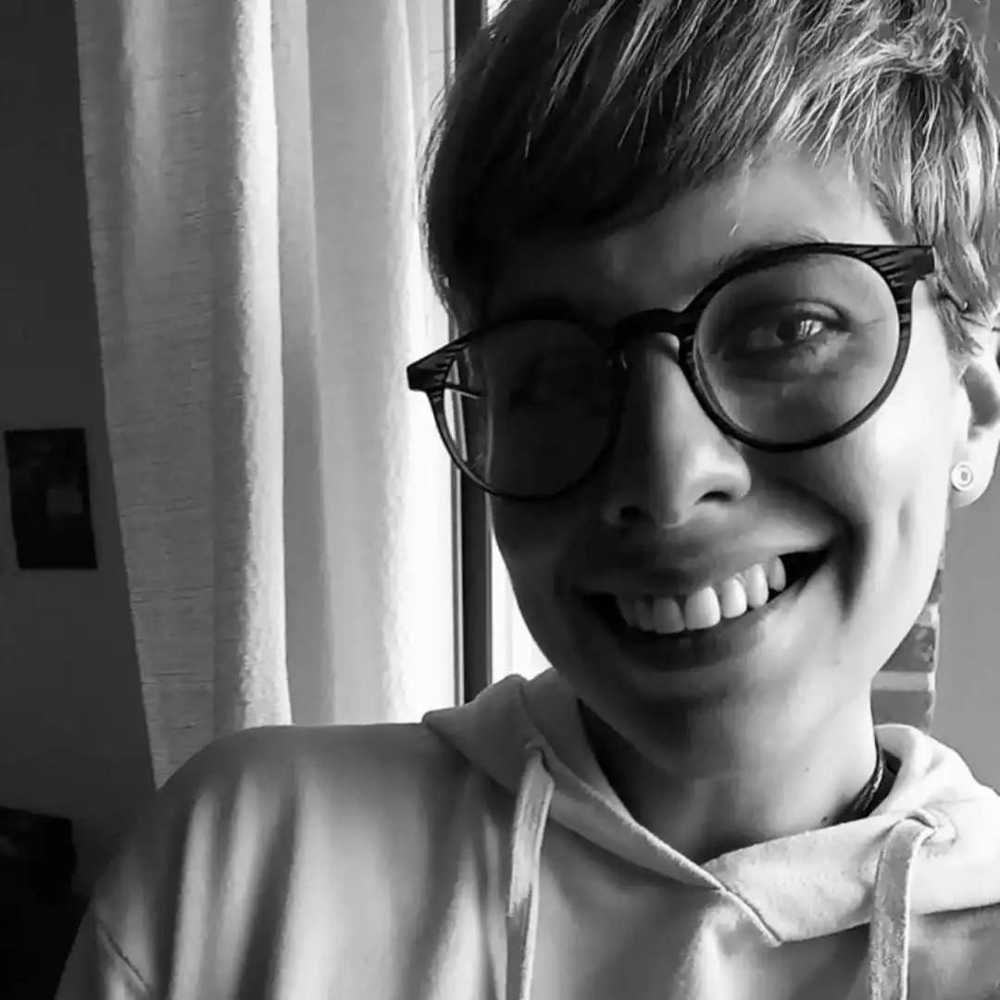
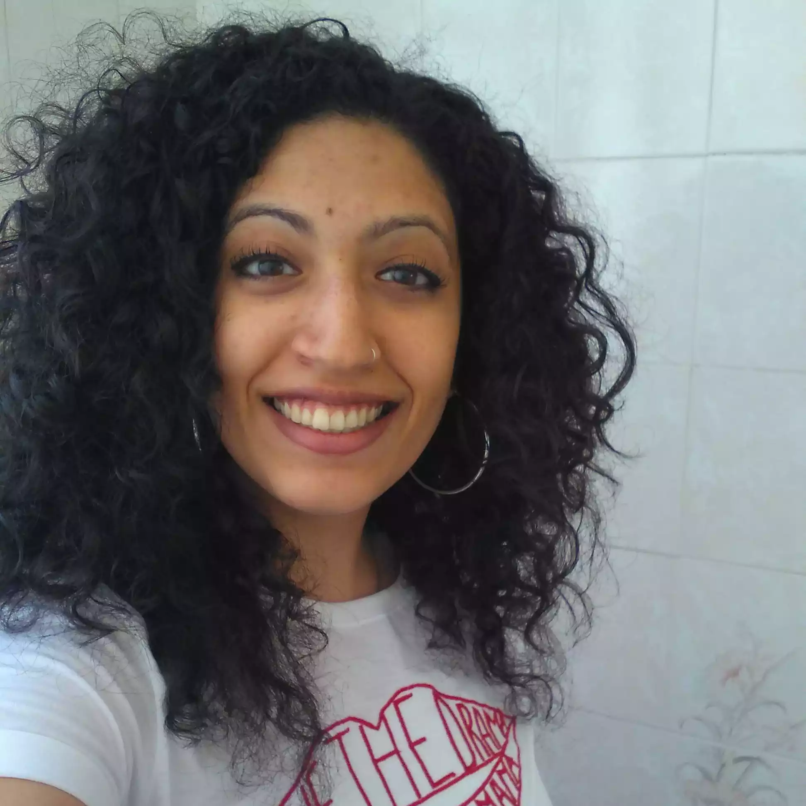
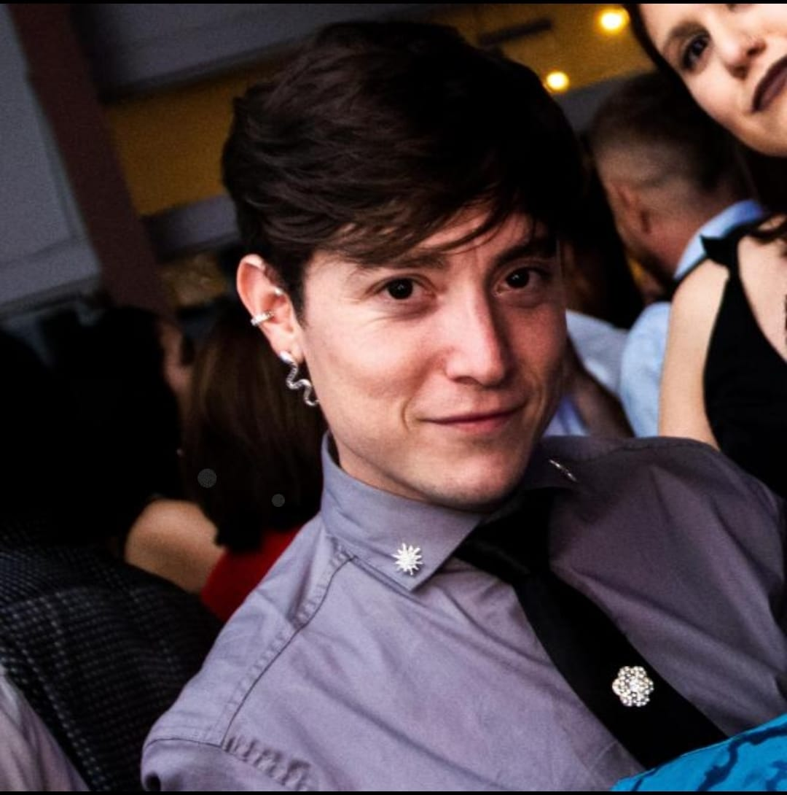
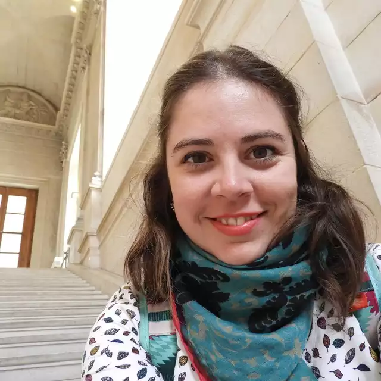
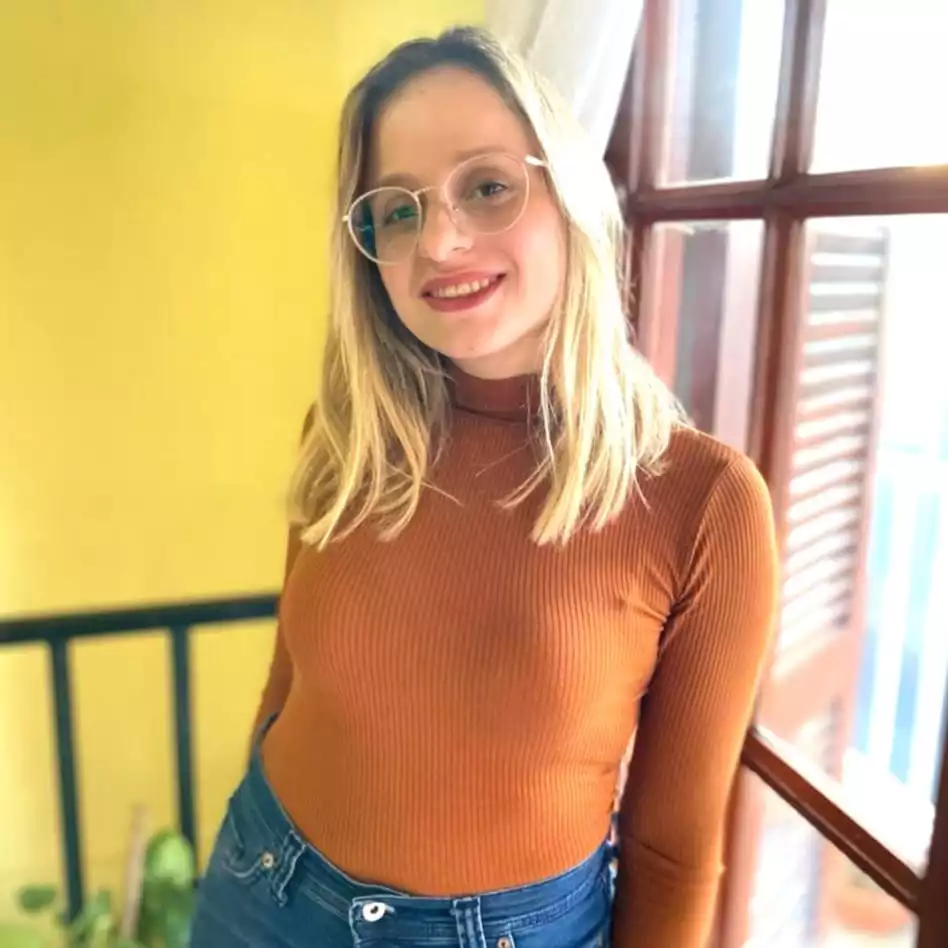

EQUIPO

Ana Clara Denaro
Anita – Bióloga (UNSL). Comencé a interesarme por la comunicación pública de las ciencias desde
que fui estudiante de grado. El conocimiento de esta disciplina me hizo replantear una y mil
veces las formas de construcción de conocimiento actuales y lo importante que es una ciencia
federal, decolonial, abierta, participativa y con una mirada proveniente desde los feminismos.
Un poco por eso y otro poco por lo curiosa e inquieta que me define, me sumé a este proyecto.
Feminidades científicas siempre hubo, la pregunta es: ¿Dónde están?
Instagram @_ani.nita

Nabila Gómez Mansur
Mendocina de pura cepa, Lic. en Bióloga Molecular de la UNSL y doctora de la Universidad de
Buenos Aires. Mi tema de investigación son los mecanismos bioquímicos y moleculares por los que
las plantas enfrentan un estrés y la exploración de diferentes estrategias para sobrellevarlo.
Me apasiona la divulgación científica y en mis tiempos libres practico karate y no puede faltar
el fútbol de los viernes! Creo que rever el rol histórico de las mujeres y feminidades en la
ciencia es fundamental para las generaciones presentes y futuras. Mujeres y feminidades
científicas siempre hubo, la pregunta es: ¿Dónde están?
Instagram: @nabilamgm
Florencia Nuñez
Soy de San Rafael y estudié Ciencias Biológicas en San Luis. Después de explorar varias áreas de la biología, actualmente fluctúo entre mi doctorado en ciencia ciudadana, la docencia y el diseño para la comunicación científica. Me gusta sacar fotos, especialmente nocturnas. Creo que es importante reflexionar acerca del papel de las feminidades en el ámbito científico y cómo el patriarcado ha influido en él.

Pini Clavero
Me llamo Pini, soy santafesino de corazón y me apasiona la tecnología. Soy Ingeniero Químico de
la UNL y Desarrollador Web (Digital House). Pero mi interés por el arte y la expresión corporal
también
ocupa un lugar importante en mi vida, por lo que disfruto bailar sobre tacos en los estilos
Heels y Femme.
Tengo el privilegio de vivir mi sexualidad e identidad de género de manera libre y milito por
los derechos de la comunidad LGBTIQNB+ para que, en un futuro, la felicidad no sea una cuestión
de suerte. En este sentido, creo que es importante destacar que las mujeres y disidencias
sexuales han tenido roles protagónicos a lo largo de la historia mundial, y en la ciencia no se
han quedado atrás. Por eso, me uno con entusiasmo a Femiciencia, un proyecto que busca
visibilizar estas voces y darles el espacio que merecen. Te invito a suscribirte y a formar
parte de este proyecto colectivo sobre las feminidades en la ciencia, que siempre estuvieron y
nos preguntamos ¿dónde están?
Instagram: @piniclavero
Camila Perez Roig
Cami, bióloga nacida, criada y recibida en Córdoba Capital, actualmente estudiante de doctorado e
ilustradora amateur. En mi doctorado, me dedico a estudiar y aprender sobre la fauna de suelo y
su relación con las funciones ecosistemas en sistemas productivos. Mi relación con el arte, el
dibujo y la ilustración tiene raíz en mi infancia pero en los últimos años pude empezar a
conectarlo con mi carrera. Y ahora, no solo con la ciencia, sino con este hermoso proyecto de
comunicación de la ciencia con perspectiva feminista.
Instagram: @mila.art.ropoda
PASARON POR FEMICIENCIA

Yamila Riego
Verónica Pereyra
